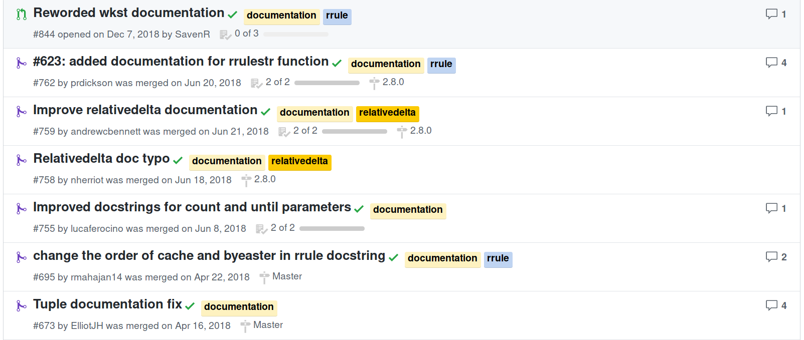
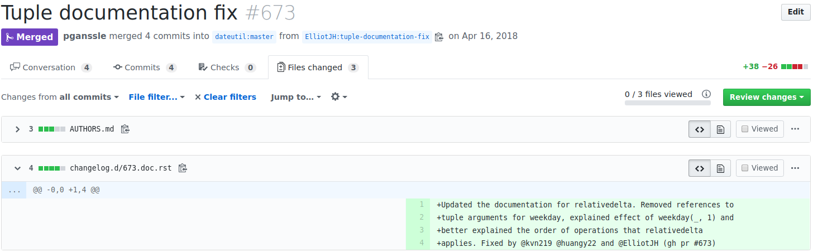

<!doctype html>
<html lang="en">

	<head>
		<meta charset="utf-8">

		<title>Build your Python Extensions with Rust!</title>

		
		
		<meta name="apple-mobile-web-app-capable" content="yes" />
		<meta name="apple-mobile-web-app-status-bar-style" content="black-translucent" />

		<meta name="viewport" content="width=device-width, initial-scale=1.0, maximum-scale=1.0, user-scalable=no">

		<link rel="stylesheet" href="reveal.js/css/reveal.css">
		<link rel="stylesheet" href="reveal.js/css/theme/white.css" id="theme">

	
		<link rel="stylesheet" href="css/custom.css">
	


		<!-- For syntax highlighting -->
		
		<link rel="stylesheet" href="css/xcode-pg.css">

		<!-- If the query includes 'print-pdf', use the PDF print sheet -->
		<script>
			document.write( '<link rel="stylesheet" href="reveal.js/css/print/' + ( window.location.search.match( /print-pdf/gi ) ? 'pdf' : 'paper' ) + '.css" type="text/css" media="print">' );
		</script>

		<!--[if lt IE 9]>
		<script src="reveal.js/lib/js/html5shiv.js"></script>
		<![endif]-->
	</head>

	<body>

		<div class="reveal">

			<div class="slides">

				
				<section data-markdown data-separator="^\n---\n$" data-separator-vertical="^\n--\n$" data-notes="^Note:">
					<script type="text/template">
<h1 style="font-size: 3em">Documentation Exercises</h1>
<br/>
<br/>
<br/>
<span style="font-size: 2.5em">
Paul Ganssle
</span>
<br/>
<br/>

<br/>
<br/>
<span style="font-size: 1em;"><em>This talk on Github:
<a href="https://github.com/pganssle-talks/doc-exercises-lightning">pganssle-talks/doc-exercises-lightning</a>
</span>
<!--
<a rel="license" href="http://creativecommons.org/licenses/by/4.0/">
    
</a>
-->
<br/>

Notes:

					</script>
				</section>
				
				<section data-markdown data-separator="^\n---\n$" data-separator-vertical="^\n--\n$" data-notes="^Note:">
					<script type="text/template">
# New users are not experts in your library


Notes:

--

# New users are documentation experts


Notes:


--

# Mutually beneficial arrangement?


Notes:

					</script>
				</section>
				
				<section data-markdown data-separator="^\n---\n$" data-separator-vertical="^\n--\n$" data-notes="^Note:">
					<script type="text/template">
<h1 style="font-size: 3em">Documentation Exercises</h1>

<br/>

<span style="font-size: 2em">
Simple exercises or problem sets demonstrating a problem that can be solved by your project...
<br/>
<br/>

<span style="font-size: 2em" class="fragment">...to be completed <em>only using your documentation</em>.</span>
</span>

--


--

# Next Monday meeting

<blockquote>
A team has a meeting at 10 AM every Monday and wants a function that tells them, given a `datetime.datetime` object, what is the date and time of the next Monday meeting? This is probably best accomplished using a [relativedelta](https://dateutil.readthedocs.io/en/stable/relativedelta.html).
</blockquote>

<br/>

```python
# --------- YOUR CODE -------------- #
from dateutil import relativedelta

def next_monday(dt):
    <<YOUR CODE HERE>>

# ---------------------------------- #

from datetime import datetime
from dateutil import tz

NEXT_MONDAY_CASES = [
    ...     # Skipped test cases for space reasons
]

def test_next_monday_1():
    for dt_in, dt_out in NEXT_MONDAY_CASES:
        assert next_monday(dt_in) == dt_out

if __name__ == "__main__":
    test_next_monday_1()
    print('Success!')
```

<!-- .element: class="fragment" -->

					</script>
				</section>
				
				<section data-markdown data-separator="^\n---\n$" data-separator-vertical="^\n--\n$" data-notes="^Note:">
					<script type="text/template">
# `dateutil` experience



--

# `dateutil` experience



					</script>
				</section>
				
				<section data-markdown data-separator="^\n---\n$" data-separator-vertical="^\n--\n$" data-notes="^Note:">
					<script type="text/template">
# Why you should do this?

- Great way to onboard people at sprints

- Signals to your users that you value their experience.

- Signals that they can contribute <em>from day 1</em>.

<br/>
<br/>
<h1 class="fragment">I'm convinced - what else can I do? </h1>
<br/>
<br/>

<span class="fragment" style="font-size: 2em">
    <b>Spread the word!</b>
</span>

					</script>
				</section>
				

			</div>

<div class="sbcontainer">
    
    
    
</div>


		</div>

		<script src="reveal.js/lib/js/head.min.js"></script>
		<script src="reveal.js/js/reveal.js"></script>


		<script>

			// Full list of configuration options available here:
			// https://github.com/hakimel/reveal.js#configuration
			Reveal.initialize({
				controls: true,
				progress: true,
				history: true,
				center: true,

				theme: Reveal.getQueryHash().theme, // available themes are in /css/theme
				transition: 'linear', // default/cube/page/concave/zoom/linear/fade/none

				
					
						// Reveal options generated from mapping
						
							width: "95%",
						
							height: "95%",
						
					
				

				// Optional libraries used to extend on reveal.js
				dependencies: [
					{ src: 'reveal.js/lib/js/classList.js', condition: function() { return !document.body.classList; } },
					{ src: 'reveal.js/plugin/markdown/marked.js', condition: function() { return !!document.querySelector( '[data-markdown]' ); } },
					{ src: 'reveal.js/plugin/markdown/markdown.js', condition: function() { return !!document.querySelector( '[data-markdown]' ); } },
					{ src: 'reveal.js/plugin/highlight/highlight.js', async: true, callback: function() { hljs.initHighlightingOnLoad(); } },
					{ src: 'reveal.js/plugin/zoom-js/zoom.js', async: true, condition: function() { return !!document.body.classList; } },
					
					{ src: 'reveal.js/plugin/notes/notes.js', async: true, condition: function() { return !!document.body.classList; } }
					
					
				]
			});

		</script>

	</body>
</html>
